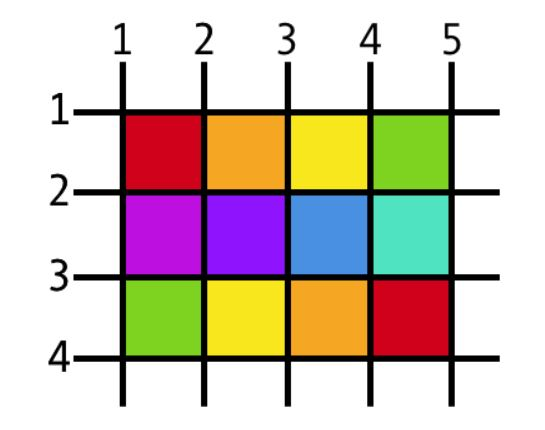

CSS-Grids
This is how we tell that a div is supposed to be made into a grid.
.wrapper{
display: grid;
grid-template-columns: 30% 70%;
}
This will divide the two divs into two columns in the row with first one occupying 30% and 70% space in the row.
Writing something like
.wrapper{
display: grid;
gird-template-columns: 30% 30% 40%;
grid-column-grap: 1em;
grid-row-gap: 1em;
grid-gap: 1em;
}
will make 3 columns in a row. The second line will create a gap between the columns. The third line creates gap between rows. The fourth line is gonna create gapping between rows and columns as well.
Justify/align items
justify-items: start; //puts it in the start
justify-items: center; //puts it in the center
justify-items: end; //puts it in the end
justify-items: stretch; //default
These will move the div inside the row up and down.
align-items:start;
align-items:center;
align-items: end;
align-items: stretch;
These will move the div inside the columns left and right.
align-self: start;
align-self: end;
//We can also use justify-self
This property when applied to a div will move it inside the row/column.
Using fractions for grid-template-column/row
Using fractions is way better than using percentages to avoid problems with margin and padding.
.wrapper{
display: grid;
grid-template-column: 1fr 2fr 1fr;
}
This will divide a row into 3 columns with the middle one being twice as wide as the other two.
Let's say we wanna make a lot of columns, say 8. Instead of writing the fractions 8 times what we can use is something called 'repeat'.
.wrapper{
display:grid;
gid-template-column: repeat(8, 1fr);
grid-template-coumn: repeat(4, 1fr 2fr);
}
the second line is gonna repeat a column 8 times. And the third line is gonna make a pattern of columns with 1fr and 2fr repeating 4 times.
Height of the row in a grid
.wrapper{
display: grid;
grid-auto-rows: 100px;
}
The second line will set the heights of the rows to 100px. But the content might overflow the row. So what we wanna do is the following.
.wrapper{
display: grid;
grid-auto-rows: minmax(100px, auto);
}
This is allow the row to stretch to contain the content inside of it if it overflows, otherwise it's gonna be 100px high.
Nesting of grids
It is possible for us to make grids inside another grid.
< div class="nested" >
< div class="nest1 >
< /div >
< /div >
The div nested and nest 1 can both be given properties of a grid.
Going two dimensional
Let's assume that the colored boxes represent divs now what we want to do is to stretch the first grid (red) such that it covers column 1 to 3 and row 1 to 4, this is how we do it in CSS:
//apply these properties to the first red div
grid-column: 1/3;
grid-row:1/4;
grid-column: 2; //this would mean we're starting at second line of column
grid-row: 1; //this means wer're starting at first line of row
The rest of the divs will adjust themselves accordingly.
This even lets us overlap divs which we don't get with flexbox.